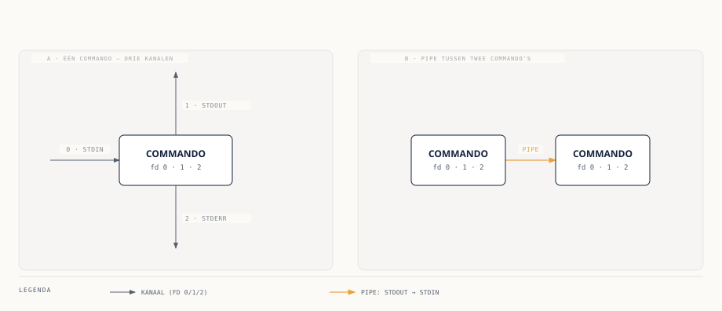

Drie kanalen, geen twee
⏱ 8 minElk proces dat u vanaf de shell start, krijgt bij de start drie kanalen mee: standaard input (stdin, bestandsdescriptor 0), standaard output (stdout, descriptor 1) en standaard error (stderr, descriptor 2). Stdin is waar een commando invoer vandaan leest, tenzij anders aangegeven meestal het toetsenbord. Stdout is waar normale output naartoe gaat, standaard uw scherm. Stderr is een apart kanaal, eveneens standaard naar uw scherm, maar specifiek bedoeld voor foutmeldingen en diagnostische berichten.
Dat onderscheid tussen stdout en stderr lijkt op een terminal overbodig — beide verschijnen gewoon op het scherm. Het nut wordt duidelijk zodra u output gaat omleiden: zonder gescheiden kanalen zou u foutmeldingen niet los kunnen houden van de eigenlijke output, en zou een script dat de uitvoer van een commando verwerkt zomaar foutregels tussen zijn data krijgen.

Fenna laat Milan dit in zijn eerste week op het Rapportagecluster zien met een simpel voorbeeld:
ls bestaat-niet.txt rapport.csvls: cannot access 'bestaat-niet.txt': No such file or directory
rapport.csvDe foutmelding komt op stderr, de bestandsnaam op stdout. Beide verschijnen op het scherm, maar zijn twee losse stromen.